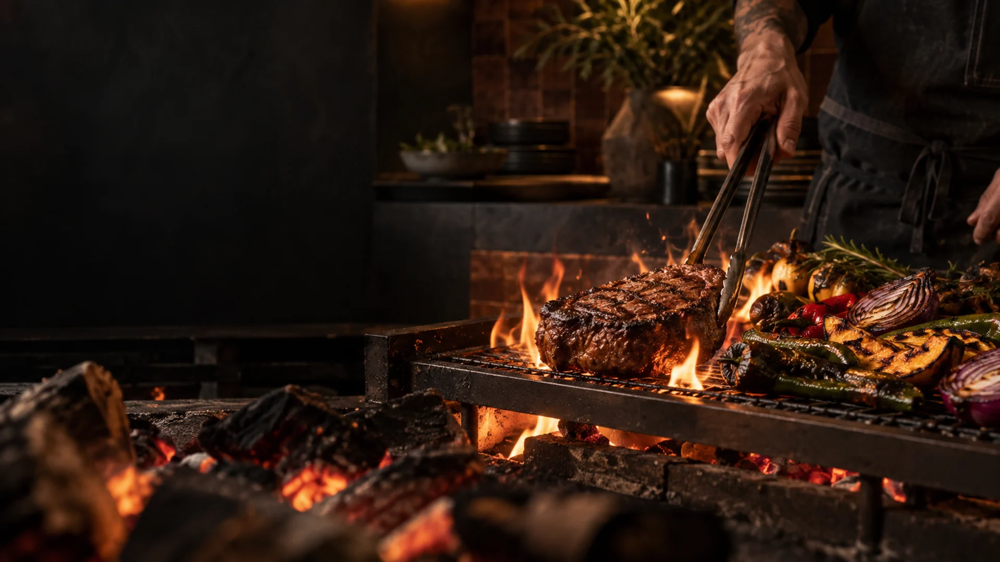

Cocina latinoamericana a la brasa
Brasa
Nativa
Fuego, origen y sabor. Una mesa contemporánea donde cada ingrediente cuenta de dónde viene.
Lo que nos mueve
Sabores que
nacen del fuego
Cocinamos sin prisa, cerca de la llama. Producto latino, técnicas honestas y platos pensados para compartir.


Nuestra esencia
El fuego no es una técnica.
Es un lenguaje.
En Brasa Nativa imaginamos una cocina viva: ingredientes cercanos, productores con nombre propio y el aroma de la leña marcando el ritmo.
- 01
- OrigenProducto local, temporada y memoria.
- 02
- FuegoBrasas pacientes, sabor profundo.
- 03
- MesaPlatos que invitan a compartir.
Atmósfera
Una experiencia para
todos los sentidos


Voces de muestra
Lo que dirían
nuestros comensales
Contenido ficticio creado para visualizar la experiencia. No corresponde a testimonios reales.
Ven a la mesa
Donde el fuego
nos encuentra
Calle Origen 108, Distrito Creativo
Dirección ficticia para esta demostración.
Horarios demostrativos
Martes — Jueves12:00 — 22:30
Viernes — Sábado12:00 — 00:00
Domingo12:00 — 18:00
LunesCerrado

Tu mesa te espera